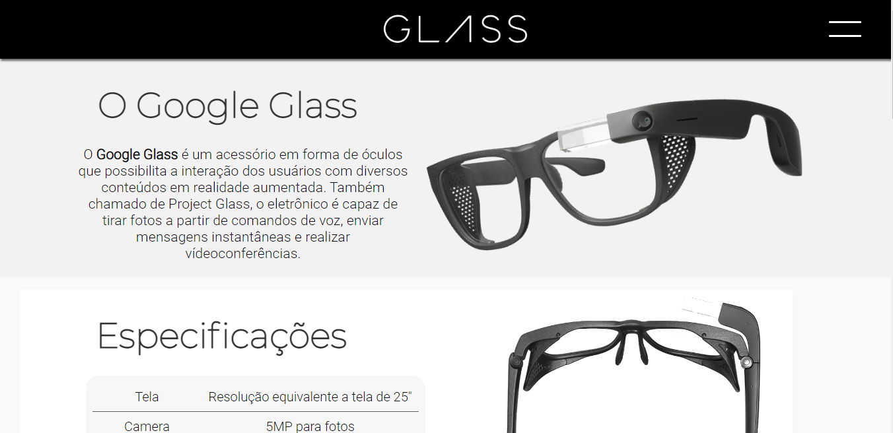
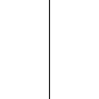
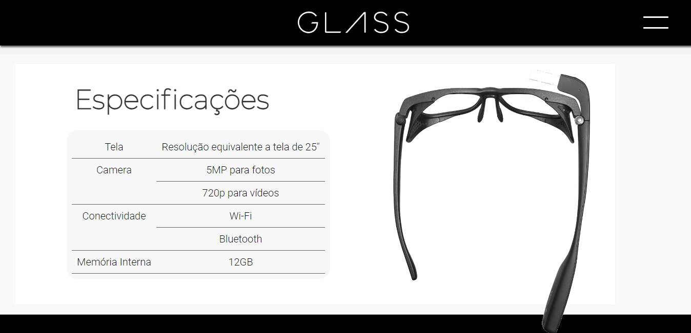
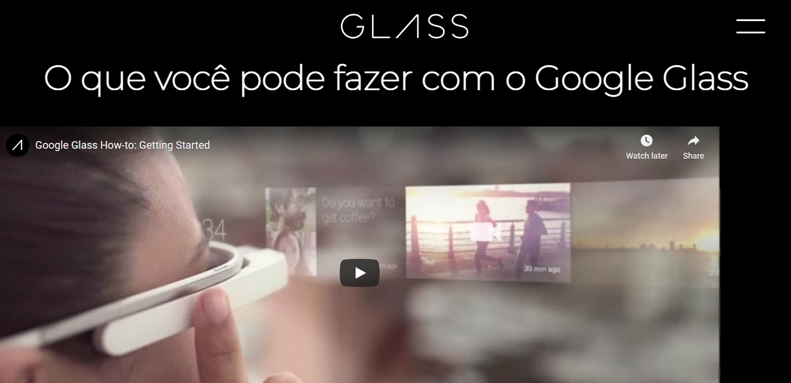
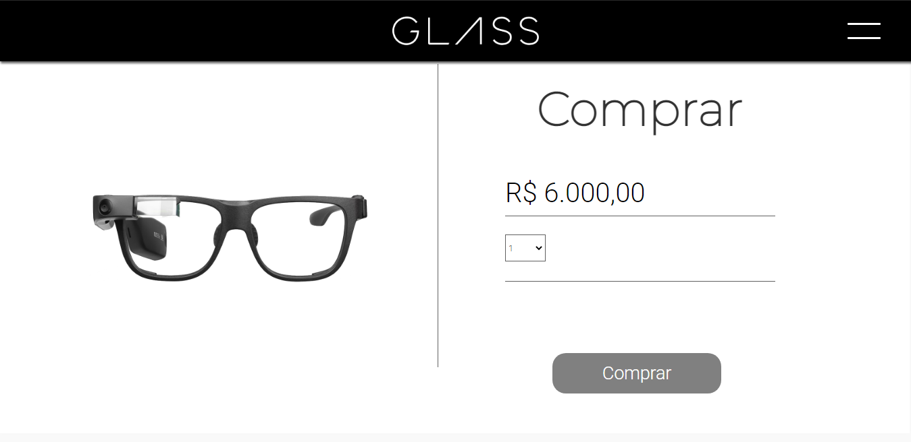
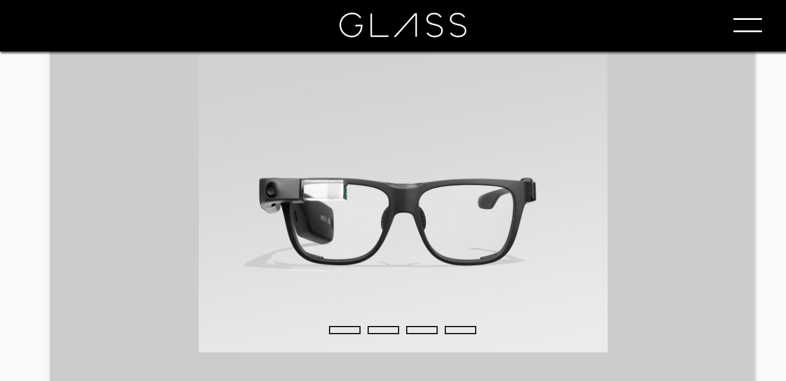
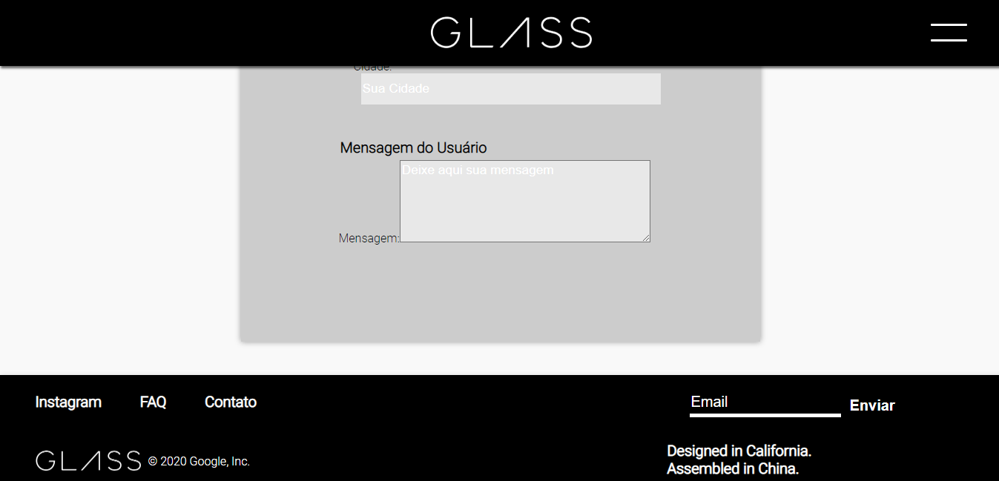
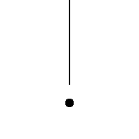

Glass
Uma releitura de um projeto da google, o Google Glass, em um estilo minimalista, simples, porém harmônico e direto ao objetivo do projeto.

Com uma paleta de cores com tons escuros para passar o tom de credibilidade e imponência que a marca merece, confira a seguir as fotos do projeto.







